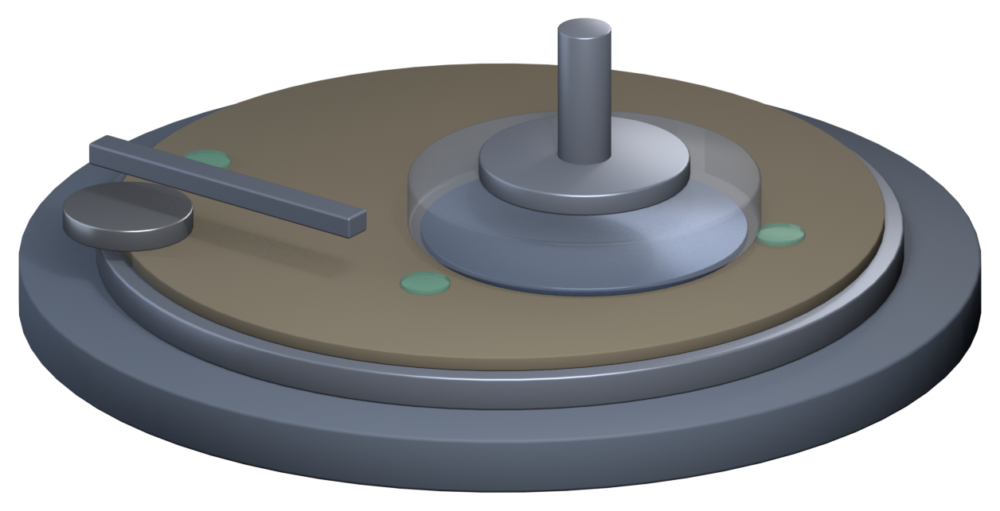

Part 2 · 工艺模块
CMP：把晶圆磨平
每铺一层膜、每挖一次槽，表面就更起伏一点。层数一多，光刻就对不准焦。CMP 用「化学软化 + 机械磨掉」把每一层抹平——它是多层金属能一层层往上盖的前提。
磨平前后可拖
Dishing / Erosion
📍 前一站 薄膜沉积，表面因为底下的图形而高低不平→本章 CMP，把晶圆表面磨平→下一站 清洗，然后进行下一层光刻
01一台 CMP 在做什么
五个零件：旋转的平台、贴在上面的抛光垫、把晶圆压下去的抛光头、送抛光液的喷嘴，还有一直在刮垫子的修整器。
抛光液里的化学品先把表面软化，研磨颗粒再把软化的那层磨掉。凸起的地方压力更大，磨得更快——所以越磨越平。
02磨平前后：拖一下看
左边是刚铺完膜的样子，表面跟着底下的图形起伏；右边是 CMP 之后。拖动中间的把手比较。
CMP 之后表面在同一高度，下一层光刻才能对得准焦。
03磨得不一定一样：Dishing 与 Erosion
软的材料比硬的容易磨，图形密的地方和疏的地方也不一样。于是出现两种典型缺陷——一个凹在单条宽线里，一个整片低下去。
为什么要在空旷处补「假图形」：CMP 的去除率和图形密度有关。设计定稿前，软件会在空白区域自动填上不通电的小方块（Dummy Fill），把密度拉平——不然一边磨得快、一边磨得慢。
04磨到哪该停
从一种材料磨到另一种材料时，摩擦力变了、反光也变了，设备据此判断终点。很多工艺还会先铺一层耐磨的停止层，让抛光在碰到它时自然慢下来。
终点检测
摩擦力 / 光学信号变化 → 判断是否磨到目标层。
停止层
下方铺一层更耐磨的材料，让抛光「磨不动」而停住。
耗材漂移
抛光垫与抛光液是消耗品，速率会变，靠前几批的量测回馈微调时间。
053D 装置：谁压在谁身上
CMP 的核心动作只有一个：把晶圆正面朝下，压在旋转的抛光垫上。承片头做成半透明，才看得见被它盖住的那片晶圆。

为什么承片头要透明：真实机器里晶圆被完全盖住，什么都看不到。但这一章要讲的恰恰是「晶圆面朝下压在垫上」——不透明的话，这句话只能靠文字。
＋原文里的名词与现场经验
以下内容逐条取自原书，保留「定义 / 现场用法 / 常见混淆」与「情境 / 做法 / 为什么」的原始结构。
名词CMP（Chemical Mechanical Planarization，化学机械抛光）
- 定义
- 结合化学反应与机械研磨，把晶圆表面磨平或去除多余材料的工艺。
- 现场用法
- 「这层 CMP 磨过头了」，现场也常直接说「研磨」。
- 相关名词
- 抛光液、抛光垫、Dishing、Erosion
- 常见混淆
- CMP 不只是用砂纸磨东西，化学作用同样重要。不同材料要用不同配方的抛光液，才能磨得又快又平。
名词碟形凹陷与侵蚀（Dishing / Erosion）
- 定义
- 碟形凹陷是较宽的金属导线中间被磨得凹下去，像一个盘子；侵蚀是导线密集的整个区域被磨得比周围低。
- 现场用法
- 「大面积金属的 Dishing 太严重。」
- 相关名词
- 图形密度、填充图形、过度抛光
- 常见混淆
- 碟形凹陷发生在「单一条宽导线」内部，侵蚀则是「一整片密集区域」一起变低，两者的原因和解法不同。
Know-how芯片里有很多不通电的图形
- 情境
- 用显微镜观察芯片，会发现很多没有连到任何电路的小方块。
- 做法
- 设计流程的最后，软件会在空旷的区域自动补上填充图形，让各区的图形密度落在规定范围内。
- 为什么
- CMP 的抛光速率和图形密度有关，密度不均匀，就会磨得一边高一边低。
- 没做会怎样
- 表面不平，导致光刻失焦、导线厚度不一致，甚至金属残留造成短路。
- 相关章节
- 第 4 章 光刻
Know-howCMP 之后要马上清洗
- 情境
- 晶圆刚磨完，表面沾满抛光液和研磨颗粒。
- 做法
- CMP 设备内部通常集成了清洗模块，晶圆磨完后立刻刷洗、冲净并烘干，干干净净地离开设备，现场称为「干进干出」。
- 为什么
- 抛光液一旦在晶圆表面干掉，颗粒会牢牢粘住，很难再洗掉。
- 没做会怎样
- 残留的颗粒变成缺陷，影响后续的薄膜和光刻，造成良率损失。
- 相关章节
- 第 9 章 清洗与污染控制
＋常见异常
| 异常 | 可能原因 | 结果 |
|---|---|---|
| 磨过头或磨不够 | 抛光速率改变、终点判断错误 | 膜厚不合格 |
| 碟形凹陷与侵蚀 | 图形密度不均、过度抛光 | 导线变薄、电阻变高 |
| 刮伤 | 抛光液中有大颗粒、抛光垫异常 | 断路或短路 |
| 金属残留 | 金属没有磨干净 | 相邻导线短路 |
| 腐蚀 | 铜表面接触化学品太久 | 导线损伤 |
＋延伸阅读
- Peter Van Zant，《Microchip Fabrication》，平坦化相关章节
- Hong Xiao，《Introduction to Semiconductor Manufacturing Technology》，CMP 章节
本章重点
- CMP 把起伏的表面磨平，是多重金属布线能继续往上盖的前提。
- 化学软化 + 机械研磨；凸起处压力大、磨得快，所以越磨越平。
- 终点靠摩擦力与光学信号判断，常配合停止层。
- Dishing 是单条宽线中间凹陷，Erosion 是整片密集区一起变低。
- 设计端用 Dummy Fill 平衡图形密度，减少 CMP 的不均匀。